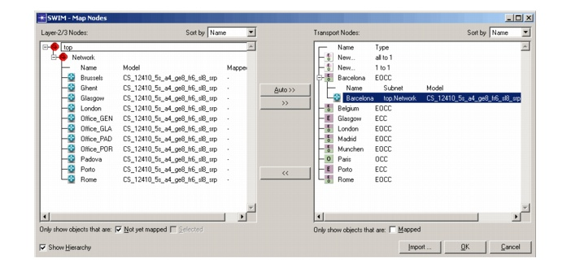

Mapping Layer-2/3 Nodes to Transport Nodes > SWIM - Map Nodes Dialog Box
SWIM - Map Nodes Dialog Box
To open this dialog box, choose SWIM > Node/Link Mapping > Node Mapping in the Project Editor of SP Guru Network Planner. For procedure descriptions, see Mapping Nodes: Procedure Descriptions.
Figure 4-1 Map Nodes Dialog Box

| Home © 1987-2007 OPNET Technologies, Inc. All Rights Reserved. This software may be covered by one or more U.S. Patents. See complete patent notice in the Legal Notices section. OPNET Support Center |